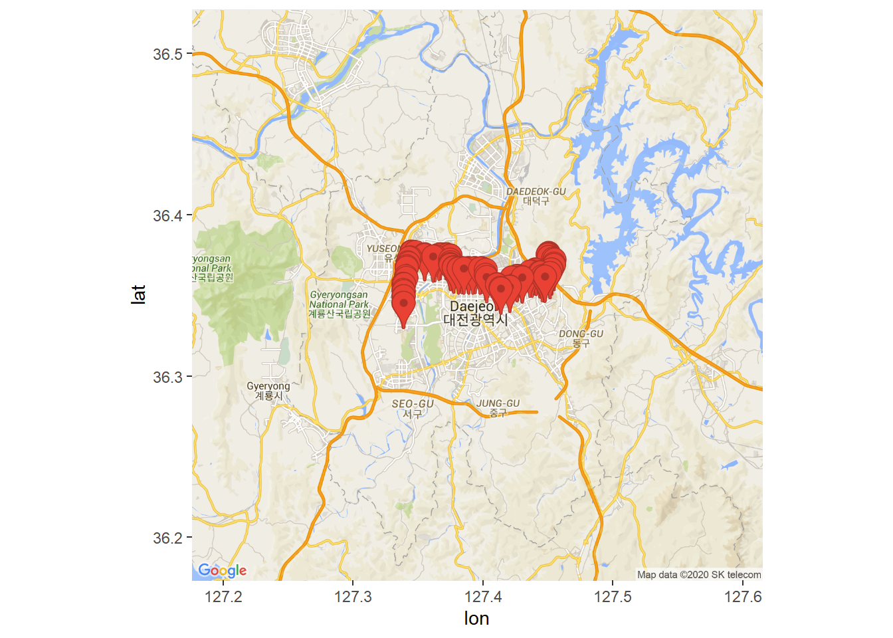
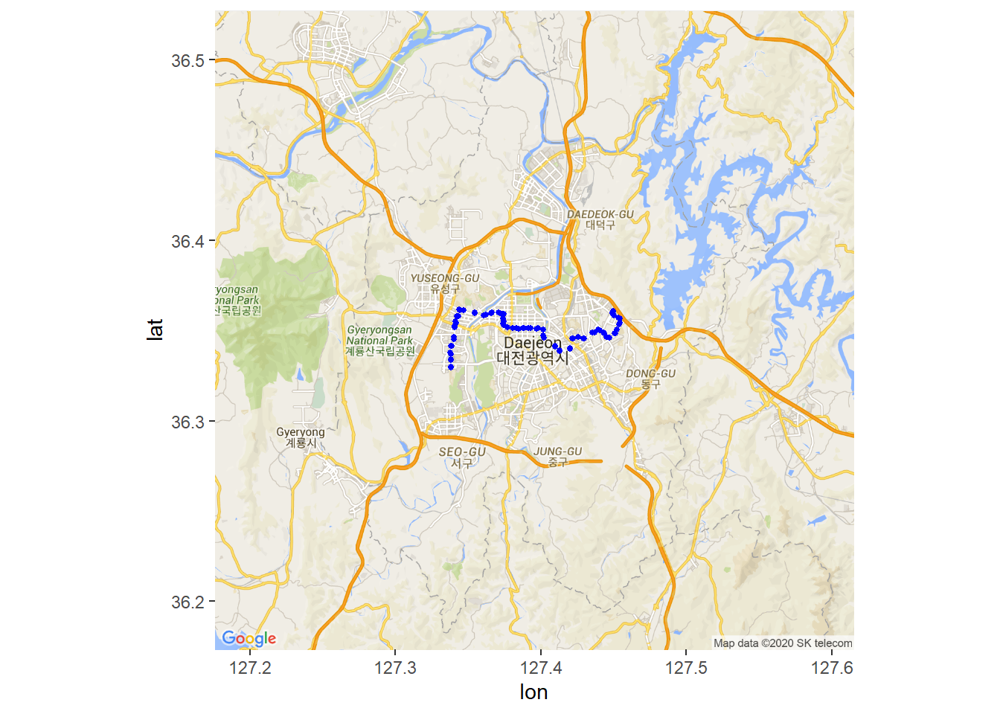
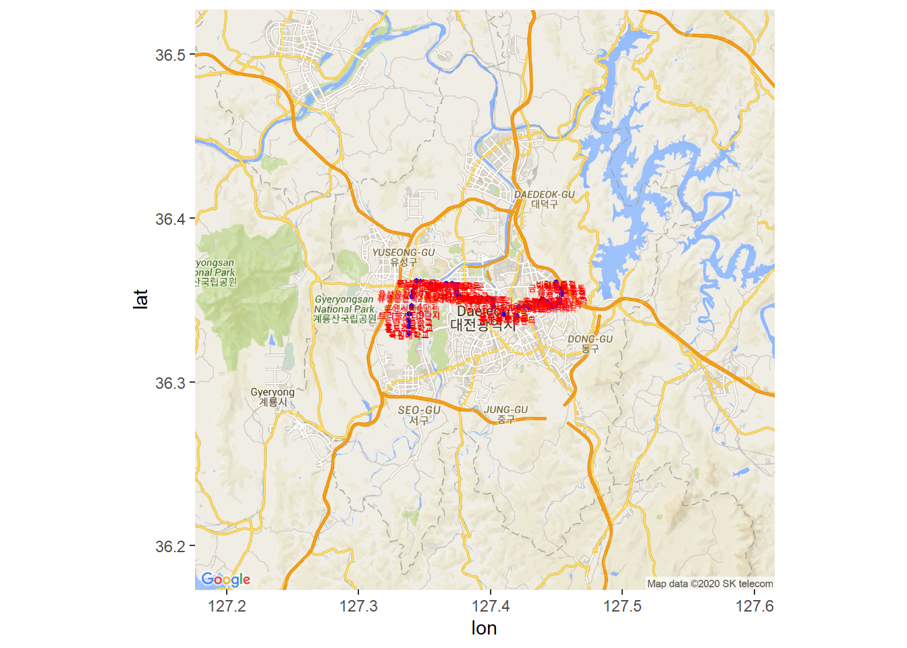

Chapter 3 대전광역시 버스 노선 정류소 시각화
data.go.kr의 Open API 활용 방법을 학습하기 위해, 현재 대전광역시 운행중인 버스 노선에 대한 정보 조회 방법을 예로 들어본다.
버스 노선별 정류소를 구글 지도에 시각화해 보기로 한다
패키지 불러오기
library(XML)
library(ggmap)
library(tidyverse)3.1 버스 정류소 위치를 Marker로 표시하기
3.1.1 Google API 인증
register_google(key="API Key") # https://console.cloud.google.com 에서 확인3.1.2 버스 위치의 중심점 찾기
station 데이터 세트에서 위치정보 컬럼만 선택하여, gc 에 대입한다.
그리고 버스 정류소의 중심 위치를 확인하여 cen에 대입한다.
station <- read_rds("data/bus_station.rds")
gc <- station[, 2:3] # lon, lat 컬럼만 추출
cen <- sapply(gc, mean) # 차량위치의 중심점3.1.3 구글 지도 정보 가져오기
get_googlemap() 함수를 이용하여 구글 지도 정보를 가져온다. 그 결과는 map에 대입한다.
map <- get_googlemap(center = cen,
maptype = "roadmap",
zoom = 11,
marker = gc)## Source : https://maps.googleapis.com/maps/api/staticmap?center=36.350464,127.395379&zoom=11&size=640x640&scale=2&maptype=roadmap&markers=36.329674,127.33825%7C36.333813,127.338264%7C36.33707,127.33825%7C36.341488,127.33867%7C36.34515,127.34043%7C36.35159,127.34072%7C36.354378,127.342026%7C36.358105,127.34342%7C36.361355,127.34468%7C36.359398,127.35449%7C36.358505,127.361%7C36.359715,127.36569%7C36.35968,127.371956%7C36.359173,127.37414%7C36.356583,127.37412%7C36.353825,127.37399%7C36.351604,127.37698%7C36.351147,127.38076%7C36.351116,127.384865%7C36.351143,127.38867%7C36.351124,127.39167%7C36.35111,127.39719%7C36.350384,127.40151%7C36.347336,127.401566%7C36.341076,127.41007%7C36.338676,127.41313%7C36.33962,127.42015%7C36.345608,127.422134%7C36.346455,127.42565%7C36.345467,127.4298%7C36.34904,127.43719%7C36.350216,127.440475%7C36.348995,127.443214%7C36.346027,127.44738%7C36.348312,127.45116%7C36.350624,127.45246%7C36.353428,127.4541%7C36.356636,127.45446%7C36.35839,127.45051%7C36.359646,127.44942%7C36.36065,127.450066%7C36.360332,127.44997%7C36.359825,127.44932%7C36.35832,127.45011%7C36.357056,127.453514%7C36.354073,127.45417%7C36.350567,127.45212%7C36.34835,127.45088%7C36.346153,127.44707%7C36.34641,127.44533%7C36.348618,127.44393%7C36.350426,127.43968%7C36.349014,127.43566%7C36.345703,127.42946%7C36.34656,127.42596%7C36.345478,127.42163%7C36.340084,127.42007%7C36.339115,127.41302%7C36.34149,127.41003%7C36.345898,127.402145%7C36.351364,127.39831%7C36.3514,127.393265%7C36.351402,127.38817%7C36.35139,127.3835%7C36.351402,127.3806%7C36.351944,127.37698%7C36.353165,127.374466%7C36.355083,127.37443%7C36.359123,127.37448%7C36.359947,127.370865%7C36.359947,127.366585%7C36.358727,127.362434%7C36.359795,127.35469%7C36.36134,127.3472%7C36.36156,127.34411%7C36.35776,127.3426%7C36.354877,127.34152%7C36.35236,127.34095%7C36.346264,127.34013%7C36.34161,127.33818%7C36.33774,127.338036%7C36.333828,127.338104%7C36.329712,127.338104&key=xxx3.1.4 구글 지도 그리기
ggmap(map)
3.2 버스 정류소 위치에 정류소 이름 표시하기
3.2.1 구글 지도 정보 가져오기
map1 <- get_googlemap(center = cen,
maptype = "roadmap",
zoom = 11)## Source : https://maps.googleapis.com/maps/api/staticmap?center=36.350464,127.395379&zoom=11&size=640x640&scale=2&maptype=roadmap&key=xxx3.2.2 정류소 위치를 점으로 표시하기
geom_point() 함수를 이용하여 정류소의 위치에 점을 찍는다.
ggmap(map1) + geom_point(data = station, # 데이터 세트
aes(x= lon, y = lat), # 위치 정보
size = 1, # 점의 크기
colour = 'blue') # 점의 색깔
3.2.3 정류소 이름을 표시하기
geom_text() 함수를 이용하여 station 데이터 세트의 stationNm 컬럼을 label의 인수로 지정하여 지도를 그린다.
ggmap(map1) + geom_point(data = station, # 데이터 세트
aes(x= lon, y = lat), # 위치 정보
size = 1, # 점의 크기
colour = 'blue') + # 점의 색깔
geom_text(data = station, # 데이터 세트
aes(x = lon, y = lat), # 위치 정보
size = 2, # 글자의 크기
label = station$stationNm, # 정류소 이름
color = "red")